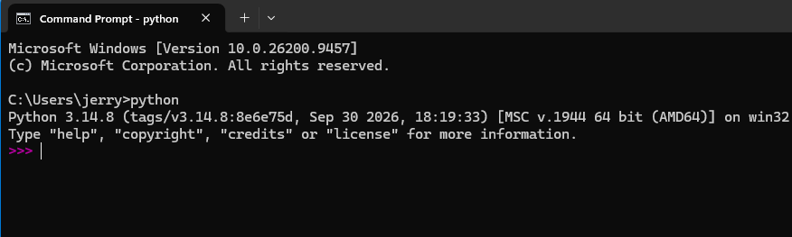
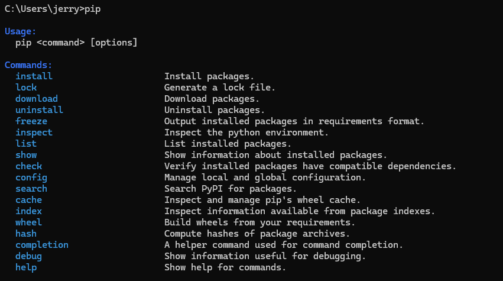
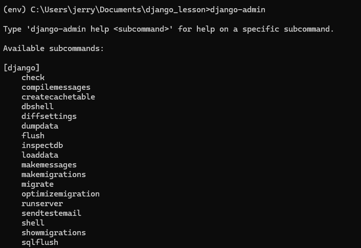
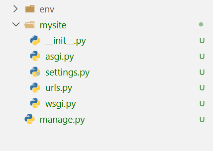
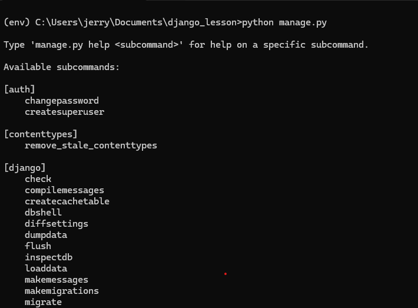
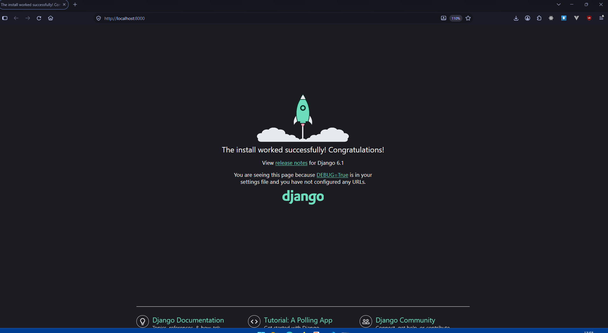
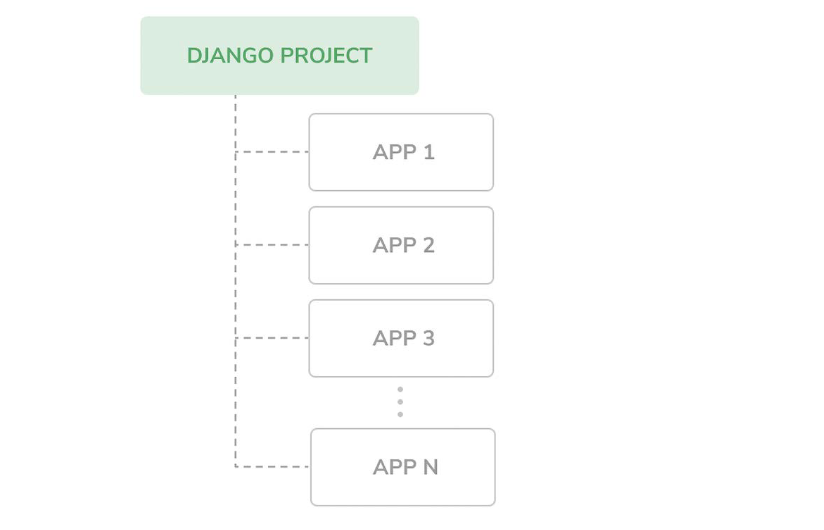
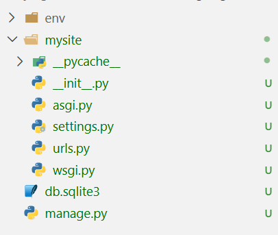

Getting Started¶
Installing Python¶
To get started, you will need to have Python installed. Visit the official Python website and download an installer for your operating system.
Verify your Python installation¶
After a successful installation, you will have the python3 command in your command line interface.
Note
We are going to be using the command line a lot, please do not fret, I will hold your hand and explain everything.
Typing the command in your CMD (if you are on Windows) will look like this.


You also get access to the pip command. This is the command you will use to install dependencies like Django.
Typing the command in your CMD (if you are on Windows) will look like this.


Creating a virtual environment¶
A virtual environment is a really cool way you can isolate your project's dependencies. This allows your project's dependencies to not be in conflict with what is installed system-wide.
Create your project structure¶
You will need to create a new folder for your project. Create one and open your command line inside it. All the commands in this chapter are run from inside this folder.
Create the virtual environment¶
To create a virtual environment, type the following command in your command line
Running this command in your project folder will create a new folder called env where your virtual environment will be created.
Activate your virtual environment¶
To use it, we need to activate the virtual environment.
On Windows,
On Linux or macOSInstalling Django¶
Now that our virtual environment has been activated, let us install Django.
Note
This command and many others we shall run must be run in our virtual environment.
If this command successfully runs, you have successfully installed Django.
Verify your Django installation¶
In your activated virtual environment, if you successfully installed Django, you now have access to the django-admin command which is the command-line utility for executing administrative tasks.
Run the command in your terminal


Create a Django project¶
Using the django-admin utility, we can create a Django project using the following command.
This will create a folder structure with a mysite/ folder as shown below.


Note
You can use any name to create your project folder. That name must not be a built-in Django module, a Python standard library module or any external app you will install. I have also added the . at the end of the command so that our manage.py is created in the root of our folder.
Running the development server¶
The manage.py file is important. It is the command-line utility for working with Django at the application level. You do not need to edit this file.
Running the file with no subcommand shows the following output


One of the sub-commands is the runserver command that runs Django's built-in development server. If we run the following command, our server will run and be available at http://localhost:8000.
You should see something like this in your command line
Watching for file changes with StatReloader
Performing system checks...
System check identified no issues (0 silenced).
You have 18 unapplied migration(s). Your project may not work properly until you apply the migrations for app(s): admin, auth, contenttypes, sessions.
Run 'python manage.py migrate' to apply them.
October 06, 2026 - 13:03:13
Django version 6.1.1, using settings 'mysite.settings'
Starting WSGI development server at http://127.0.0.1:8000/
Quit the server with CTRL-BREAK.
WARNING: This is a development server. Do not use it in a production setting. Use a production WSGI or ASGI server instead.
For more information on production servers see: https://docs.djangoproject.com/en/6.1/howto/deployment/
Open your web browser of choice and go to the address http://localhost:8000. You will see this.


Congratulations! You have successfully installed Django, set up your project and run the development server.
Projects vs applications¶
You have noticed I have used the terms project and application. Are these different? You may see the terms project and application used interchangeably, but they are different.
Django Projects¶
A Django project is the default installation with some settings. We are going to look at this in more detail.
Django Apps¶
Applications are collections of related views, models, templates and URLs. We use these to build specific functionality, and they can be plugged into any other project.
Note
Your project is your entire website. The applications are the different functionalities that are present within your project. A project can contain many apps. Apps can be plugged into other projects.


A tour of a Django project¶
At this point we have not yet looked at the Django project file and folder structure in detail.


-
mysite/: This is the project folder we created. It is the root of the entire website. It contains the following files-
__init__.py: This is an empty file that tells Python to treat the foldermysiteas a Python package. -
asgi.py: You configure your Django application here when running it with an ASGI-compatible server. ASGI is the emerging standard for running Python web servers. -
settings.py: This file indicates settings and configurations for your Django application. It also contains Django's defaults. -
urls.py: This is the place where URL patterns live. All URLs mapped to views are to be defined here. (we shall look at this later) -
wsgi.py: This is the configuration to run your project as a WSGI application with WSGI-compatible servers.
-
-
db.sqlite3: This SQLite database file lives outside themysite/folder. -
manage.py: The command-line utility for working with your Django app.
We shall end this chapter here. Next, we shall look at Django Application and discuss the philosophy of Django.